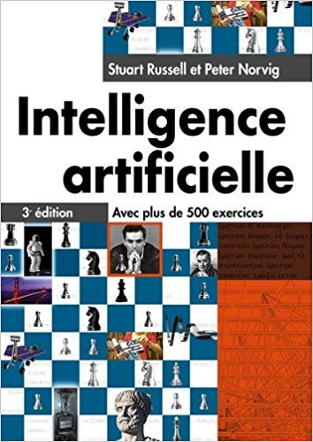

| Emploi et location | Professeur |
|---|---|
| session printemps Jour: Lundi Temps: 14:30-18:30 Lieu: ENSA salle 14 |
Anass Belcaid email: anass.belcaid@gmail.com |
|  |
Intelligence artificielle 3e édition Stuart Russel Pearson, 2010 La version anglaise du livre est disponible (avec accès gratuit) dans le site livre Anglais |
| Date | Sujet | Lecture | Slides | Travaux pratique |
|---|---|---|---|---|
| 18 Mars | Introducion | Stuart: 1.1, 1.2, 1.3, 1.4, 2.1 | Lecture
01 chapitre-01 |
Tutoriel python et Autograder |
| 25 Mars | Recherche non informée | Stuart: 3.1, 3.2.1, 3.3, 3.4.[1-4] | Lecture 02 | Recherche |
| 1 avril | Recherche informée | Stuart: 3.5.1, 3.5.2, 3.6 | Lecture 03 | |
| 15 Avril | Recherche en Adversité (Jeux) | Stuart: 5.1, 5.2, 5.3, 5.4.1 | Lecture 04 Alpha_beta | Multiagent - Jeux |
| 22 avril | ExpectiMax et utilités | Stuart: 5.5, 13.1, 13.2 | Lecture 05 | |
| 29 Avril | Processus de décision de Markov (1) | Stuart: 16.1, 16.2, 16.3, 16.5, 17.2 | Lecture 06 | Apprentissage par réinforcement |
| 06 Mai | Processus de décision de Markov (2) | Stuart: 17.2, 17.3, 17.4 | Lecture 07 |
| Etudiants | Notes |
|---|---|
| RIANI Fatima-Zohra, RIDA Asmaa | Introduction |
| LOUGUIT Amine, ZOUGAGH Abdelhakim | Tutorial Python |
| ARNANAS Hind, BENLAHCEN Khadija | Exploration non informée |
| NOUAR Safae, ZINE Meryeme | TD Recherche + TP tutorial |
| MOUHAJIR Oicila, TISSOUDAL Iman | Exploration informée |
| AZZIMANI Imane, BAKHOUYA Nada | Recherche en adversité |